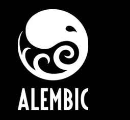

|  | |||||||||||||||
|
|||||||||||||||
  |
||||||
Click here to see the video from our press event at SIGGRAPH 2011. |
||||||
| AFTER A YEAR OF INDUSTRY ADOPTION, LUCASFILM AND SONY PICTURES IMAGEWORKS RELEASE ALEMBIC 1.1 | ||||||
|
ALEMBIC is an open source exchange format that is becoming the industry standard for exchanging animated computer graphics between content creation software packages. LOS ANGELES, CA – August 5, 2012 – Alembic 1.1, the open source project jointly developed by Sony Pictures Imageworks (SPI) and Lucasfilm Ltd. released its newest improvements and updates at this year's ACM SIGGRAPH Conference. Joint development of Alembic was first announced at SIGGRAPH 2010 and Alembic 1.0 was released to the public at the 2011 ACM SIGGRAPH Conference in Vancouver. The software focuses on efficiently storing and sharing animation and visual effects scenes across multiple software applications. Since the software's debut last year both companies have integrated the technology into their production pipelines. ILM notably using the software for their work on the 2012 blockbuster The Avengers and Sony Pictures Imageworks on the 2012 worldwide hits Men in Black 3 and The Amazing Spider-Man in addition to the upcoming animated feature Hotel Transylvania, scheduled for release September 28, 2012. Alembic 1.1's updates include Python API bindings, support for Lights, Materials, and Collections, as well as core performance improvements and bug fixes. Feature updates to the Maya plug-in will also be included. The code base for Alembic is available for download on the project's Google Code site and more information can be found online at: http://www.alembic.io "We've been very grateful to see Alembic broadly adopted across the VFX and Animation industries application providers and studios around the world. This new release continues to add requested features while maintaining the speed and compatibility the industry has come to expect," says Rob Bredow, Chief Technology Officer, Sony Pictures Imageworks. Since Alembic's 1.0 release, solution providers such as Autodesk, The Foundry, Solid Angle, Side Effects and Luxology have added Alembic support in their product lines. Software plugin provider, Exocortex, has also introduced a suite of Alembic based plugins for all of Autodesk's major content creation tools. Dave Story, CTO, Lucasfilm says,"Lucasfilm has continued to build its visual effects and animation pipelines around Alembic and it has helped us to greatly increase our interoperability. Support of Alembic by our third-party software providers is critical to Alembic's success. We're gratified to see the pace of adoption in the last year and will continue to invest ourselves as we forge relationships with third party solution providers." Also of note, Sony Pictures Imageworks and Lucasfilm have begun collaborating more closely with Autodesk on continued Alembic support within Autodesk's products, initially focused on Autodesk Maya software. Maya 2013 took steps to integrate Alembic at a base level with the addition of Alembic-based GPU file caching. Marc Petit, Sr. Vice President of Media and Entertainment at Autodesk says, "Autodesk is committed to Alembic, as you can already see from the integration into Maya 2013. We're taking steps so that our developers can more directly collaborate with the Alembic team on future integration and also continue to contribute to the open source project. Alembic is gathering momentum and we think it is solving a real problem for our customers." Here's what some of the other leading solution providers are also saying about Alembic: "Over the last year Alembic support has broadened across The Foundry's own product lines as well as spreading in a wave across the industry. Getting data exchange right is hugely important, and rapid Alembic adoption has become a breath of fresh air for software vendors and their customers." "It is not an overstatement to say that there is an Alembic revolution happening in the VFX and game industries. Exocortex and our clients, though the "Exocortex Crate" suite of Alembic tools for 3DS Max, Softimage, Maya and Arnold, are proud to be on the front lines of this transformation. This transformation would not be possible if it weren't for the leadership of Lucasfilm and Sony, the strong design of the core Alembic library and the first class support from Alembic's developers." "We are pleased to bring the Alembic-Arnold integration up-to-date with Arnold 4.0. Alembic's fast, compact format and data de-duplication are a natural fit for Arnold procedurals and instancing. We are excited to see increasing industry adoption of Alembic in conjunction with Arnold. Solid Angle stands firmly behind Alembic and will continue to contribute to its development." The Alembic team is hosting a SIGGRAPH Birds of a Feather talk, Practical Application of Alembic, Tuesday August 7th at 3PM at the Los Angeles Convention Center, Room 410. There, Lucasfilm and Sony Pictures Imageworks will review their own integration experience and discuss general Q&A. |
||||||
| LUCASFILM AND SONY PICTURES IMAGEWORKS RELEASE ALEMBIC 1.0 | ||||||
|
Open source exchange format provides standard for exchanging animated computer graphics scenes between content creation software packages. VANCOUVER, B.C. - August 9, 2011 - Alembic 1.0, the open source project jointly developed by Sony Pictures Imageworks and Lucasfilm Ltd. was released to the public today, it was announced at ACM SIGGRAPH conference in Vancouver, British Columbia. Alembic is the computer graphics interchange format developed by the two entertainment giants last year and focused on efficiently storing and sharing animation and visual effects scenes across multiple software applications. It was designed to handle massive animation data sets often required in high-end visual effects and animation, which are routinely developed and produced by companies such as Lucasfilm's Industrial Light & Magic and Lucasfilm Animation Ltd. and Sony Pictures Imageworks. The studios each saw the need for a tool like Alembic, something that would fit within existing pipelines and allow for customization at the facility level without impeding the ability to share work. In addition to the features announced at last year's SIGGRAPH, Alembic 1.0 includes automatic data de-duplication. The software automatically recognizes repeated shapes in complicated geometry and only writes a single instance to disk. This makes Alembic 1.0 use dramatically less disk space than promised without requiring any extra steps on the part of the user and can improve both write and read performance as well. In the case of hero deforming humanoid characters, including hair, shot caches have been reduced by more than 70%. For complex, deeply hierarchical and mostly rigid assets like the Transformers characters, tests have shown cache reduction in the order of 98%. The code base for Alembic is available for download on the project's Google Code site and more information can be found online at: http://www.alembic.io Joint development of Alembic was first announced at last year's Siggraph by Lucasfilm's visual effects company Industrial Light & Magic and Sony Pictures Imageworks. The companies joined forces when it became apparent that they were independently developing software designed to solve, a problem universally faced by the visual effects and animation production community: how to easily share complex animated scenes across a variety of disciplines and facilities regardless of what software was being used. Alembic includes tools that allow collaboration while working with a generic, extensible, data representation scheme. In essence, it distills complex and often proprietary, animated scenes into application-independent files with baked geometric results. These baked results can be fully re-importable across the range of supporting software. "Alembic addresses a fundamental issue in a world where assets are shared across many companies. Alembic's production-ready ability to seamlessly translate shapes across a wide variety of applications saves time and resources," said Rob Bredow, CTO of Sony Pictures Imageworks. "By releasing Alembic as an Open Source project, users have the opportunity to improve the software based on their needs and experience. We're really starting to feel the positive effects of Open Source, as a community of visual effects and animation professionals come together to solve problems more effectively today than ever before." "Alembic is giving us space efficiencies beyond our most optimistic expectations and at effectively the same time cost as before. This is sure to have a significant impact for anyone who uses the format and we are excited to be able to share this with the Open Source community," said Tommy Burnette, Head of Global Pipeline at Lucasfilm Ltd. "Previously each facility had to produce their own unique solutions to the problem of efficient caching and scene handoff, but the beauty of Open Source is that with strong collaborative efforts we can effectively provide solutions for everyone." Both studios have made strides with open source software and recognize the importance of such initiatives, ILM with the industry standard OpenEXR format and Imageworks with OSL, Open Color I/O, Maya Reticle, Field3D, Scala Migrations and the newly release PyP. Here's what some of the leading solution providers have to say about Alembic:
"The visual effects industry continually strives to reduce production complexity and improve collaboration throughout the pipeline. Autodesk is excited to support the implementation of production-tested technology, like Alembic, which enables digital entertainment artists to spend less time on internal custom software development and more time on creative storytelling. And that's a win-win, not just for the industry, but for the audience.",
"The way that ILM and Sony Pictures Imageworks have collaborated on this initiative has been truly impressive. Alembic is clearly born from real production experience of the demands of scalable asset driven production, which is vital to give it the robust foundation to become a major new industry standard. At The Foundry we wholeheartedly support Alembic."
"Multi-application pipelines offer maximum flexibility for modern digital content production, and the Alembic format offers a reliable and open path to exchange data between modo and other leading 3D applications. Luxology is excited to demonstrate today what we have been able to achieve with the initial implementation of Alembic in modo."
"With Alembic, ILM and Sony Imageworks have created an invaluable interoperability tool that fits perfectly into Houdini's procedural philosophy. Our tests have shown how efficient Alembic can be and we know our customers will be thrilled." Alembic is being offered via the New BSD License and is written in C++ and Python, leveraging the boost and HDF5 C/C++ libraries heavily, as well as OpenEXR. For more information visit: opensource.imageworks.com or www.alembic.io
|
||||||
| ALEMBIC AT SIGGRAPH 2011 | ||||||
|
Alembic 1.0 Press Event
TUESDAY, 9 AUGUST 9:30 AM - 10:30 AM
Join Lucasfilm and Sony Pictures Imageworks as they give a joint update on the current state of the open source initiative, Alembic, and the software's upcoming 1.0 release. Vendors such as Autodesk, The Foundry, Luxology, and Side Effects Software will be on hand to demonstrate Alembic working in their software and answer questions.
Tommy Burnette - Lucasfilm Singapore Please note that priority seating will be provided to members of the press.
Practical integration of Alembic WEDNESDAY, 10 AUGUST 10:00 AM - 11:30 AM A dialogue with the Alembic development team focused on pipeline integration and optimization of the format. Topics include API usage, collaboration with studio partners, and standardization of the format.
|
||||||
| UPDATES | ||||||
|
July 12, 2011 - Alembic 1.0rc1 Beta Update Hello Alembic users! Welcome to the latest beta version of Alembic. As we close in on a 1.0 release, we hope the API and file format are now stable and fully forwards-compatible. We consider these to be at a first "Release Candidate" stage. (note that this doesn't yet apply to the application- specific reference implementations). As with all pre-release software, we can't guarantee that changes won't occur between now and a full 1.0 release. The main Mercurial repository has been updated (http://code.google.com/) p/alembic/source/list), and a new tarball has been uploaded (http://code.google.com/p/alembic/downloads/list). This release is mostly a bugfix and cleanup release. We've improved the build support for Windows and OS X, as well as conformed the definitions of the Curves and NuPatch types more closely to the RI spec. Those changes, though, do mean that Curves and NuPatch geometry written out with previous releases will not be recognized with this release. The complete code changes for this release can be examined here: http://codereview.appspot.com/4662068 Some highlights:
One other important thing to note: previous releases of Alembic did not require any of the compiled Boost libraries, but going forward, Alembic requires libboost_thread. Although this is our initial 1.0 release candidate, it should still be considered pre-release software, and should not be used for critical, deadline-driven production work. If you have any questions about this release, please feel free to ask them on the alembic-discuss group: http://groups.google.com/group/alembic-discussion Thank you for your continued support! The Alembic Team
May 18, 2011 - Alembic 0.9.3 Beta Update We're pleased to announce the 0.9.3 Beta release of Alembic. Highlights of this version include:
For getting Alembic, see the instructions here: http://code.google.com/p/alembic/wiki/GettingAlembic Thank you for your continued support! The Alembic Team
February 23, 2011 - Alembic 0.9.2 Beta Update We're pleased to announce the 0.9.2 Beta release of Alembic. Highlights of this version include:
We continue to make great progress inside our two studios, but still need additional real-world testing outside of our doors. We ask that you please download and evaluate at your earliest convenience so there is an opportunity to contribute feedback to the 1.0 design. Thank you for your continued support! The Alembic Team
November 2, 2010 - Welcome to the release of Alembic .9 The collaborative effort between Lucasfilm and Sony has been going well and we're pleased to bring this beta release to you. There are some important things to note about this .9 release:
We are pleased with the progress we've made so far, but really look forward to some real-world testing outside of our two studios. Thanks to everyone who has been contributing so far, not only at Lucasfilm and Sony, but to our partners and friends who have been encouraging us on this project. A special note of thanks goes to Chris Horvath, who has recently moved to Sydney to work at Fuel. His daily contributions and passion will be missed. Richard Kerris, CTO Lucasfilm & Rob Bredow, CTO Sony Pictures Imageworks SUBSCRIBE TO ALEMBIC ANNOUNCE AT GOOGLE GROUPS |
|
TM & © Lucasfilm Entertainment Company Ltd. or Lucasfilm Ltd. All rights reserved. © 2010 Sony Pictures Imageworks Inc. All rights reserved.
|